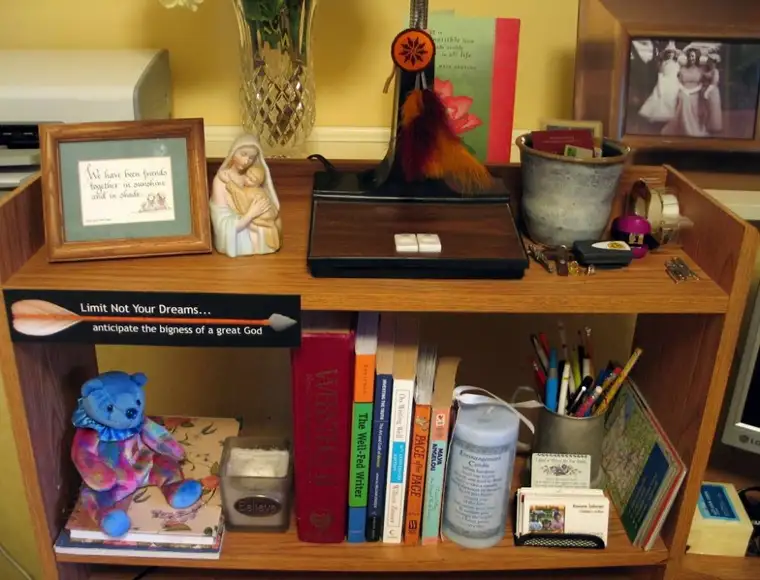

 |
| My writing desk shelves – some of the items that inspire me toward creativity |
Until a few years ago, I’d never even heard of the word charism. But ever since a friend mentioned what one of mine might be in an email note, I’ve been intrigued by charisms and the idea that every Christian is given unique spiritual graces and qualifications to perform his or her task in the Church. I’ve also wondered what mine might be. So when an opportunity came up tonight to attend a workshop to discern charisms, I jumped at the chance.
After answering the 120 charism evaluation questions with as much honesty as possible, I was ready to read the results. Of the 24 charisms listed, that of writing was identified as being among my top strongest charisms.
I find the explanation of the writing charism fascinating: “The charism of writing empowers a Christian to be a channel of God’s creativity by using words to create works of truth or beauty that reflect the fullness of human experience and bring glory to God.” This from The Quick and Catholic Charism Handbook (p. 54).
The handbook says it’s often difficult for us to see how writing can be a charism, since writing is a necessary life skill in our heavily verbal culture. But there are ways to know whether our writing is merely skill, natural ability or charism.
Because charisms are intended to be vehicles of God’s love and provision for the world, they cannot be used to serve ends that oppose God’s will. “If our writing is an expression of a charism, the purposes of God will be served by our words and there will be a lingering spiritual quality about the prose or poetry produced,” the handbook says.
But it also says that a charism of writing isn’t always used to produce explicitly religious literature. As an example, it mentions Lord of the Rings author J.R.R. Tolkien, a devout Catholic as well as famous Oxford professor who disdained “heavy-handed religious allegory that didn’t respect the power and nature of good fiction.” Despite lack of an overtly Christian expression in the fantasy series, some readers have converted to Christianity just by reading his masterpiece.
“The hope, goodness and spiritual depth of the faith are communicated indirectly by a piece of fiction and yet can touch the imaginations and spirits of some readers with a power that a straightforward essay or sermon could never achieve.”
Certainly, not all of my writings have resulted in “hope, goodness and spiritual depth of faith,” but I would say that many of my best written thoughts have leaned in that direction. In fact, there are times when I’m fashioning a piece that I feel as though I am not the only author; that a Divine hand is guiding me. And when finished, I feel changed, as if the world has just become more meaningful. And without a doubt, I know this is not because of anything I have accomplished on my own, but because of this spiritual life force that helped direct me. I was merely the blessed vessel, and hands and heart of Christ, if you will.
Here are some questions the handbook suggests to help you discern whether your writing is a charism or a skill or natural ability:
1. Is writing a form of prayer or contemplation for you?
2. Is it one of your favorite spiritual exercises?
3. When you seek to express your love for God or serve the Kingdom of God, is writing one of the first activities you turn to?
4. Have you been told by others that your writing has nurtured their faith, encouraged them to seek out the good and true, and brought them closer to God or enabled them to live a more truly human life?
If so, it’s likely that you, too, have been gifted by the Holy Spirit with the charism of writing. Personally, I can think of few greater honors than that of enabling others to live a more truly human life through the act of verbal expression.
Q4U: What recent creative works have helped you live a more truly human life?